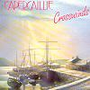

Celtic Lyrics Corner > Artists & Groups > Capercaillie > Crosswinds > An Ribhinn Donn
|  | An Ribhinn Donn |
| Credits : | Arranged by Capercaillie |
| Appears On : | Crosswinds |
| Language : | Gàidhlig (Scottish Gaelic) |
| Other Versions : | " An Rìbhinn Donn " on James Graham's album Siubhal |
| Lyrics : | English Translation : |
| Ochoin a ri, 'si mo ribhinn donn | Alas and woe is me, my brown-haired maiden |
| Dh 'fhag mi fo mhi-ghean 'us m'inntinn trom | The cause of my discontent and my heavy heart |
| Gur e a boichead a rinn mo leonadh | It is her beauty which has left me grieving |
| 'S cha bhi mi beo gun mo ribhinn donn | And I cannot survive without her |
| Is truagh an drasda nach robh mi 'm bhard | Would that I were a bard |
| A ghleusadh clarsach 's a sheinneadh dan | Who could tune a harp and sing a song |
| 'S gu 'n innsinn buadhan na maighdinn uasail | So that I might extol the virtues of that gentle maiden |
| Mu' bheil mo smuaintean gach oidhche 's la | Who feels my thoughts both night and day |
| Gur boidheach, dualach an cuailean min | Beautiful and luxuriant is the delicate hair |
| A th'air a'ghruagaich a bhuair mo chridh' | Of the maiden who has wounded my heart |
| Gur binne comhradh na guth na smeoraich | Her conversation is sweeter than the thrush's singing |
| 'S tha mise bronach o'n dh'thag i mi | And I am filled with sorrow since she left me |
| Ged tha mo ghrian-sa a'triall fo sgleo | Though my sun has gone under a cloud |
| Is mise 'm bliadhna mar ian 'sa cheo | And I this year, like a bird, enshrouded in mist |
| Togaidh 'n sgaile 's ni ise dearrsadh | The shadow will lift and she will shine again |
| 'S gu 'm faigh mi slainte gach la ri 'm bheo | And I will live in health each day of my life |